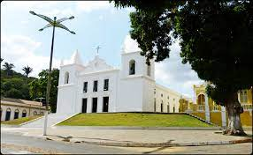
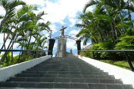

Informações técnicas sobre relevo, população, IDH etc.
| INFORMAÇÕES | |
|---|---|
| Municípios limítrofes | Granja , Tianguá , Cocal e Cocal dos Alves |
| Fundação | 7 de julho de 1759 (261 anos) |
| Área total | 1 311,628 km² |
| Clima | tropical |
| PIB | R$ 214 732,000 mil |
| IDH | 0,571 — baixo |
| INFORMAÇÕES TERRITORIAIS | |
|---|---|
| Número de habitantes | 60 889 hab. |
| Superfície de Viçosa do Ceará |
131 162 hectares
1311,62 km² (506,42 sq mi) |
| Densidade populacional | 46,4 ha./km² |
| Altitude de Viçosa do Ceará | 743 metros de altitude |
| Coordenadas geográficas decimais |
Latitude:
-3.56324
Longitude: -41.0948 |
| Coordenadas geográficas sexagesimais | Latitude: 3° 33' 48'' Sul , Longitude: 41° 5' 41'' Oeste |
| INFORMAÇÕES DO MUNICÍPIO | |
|---|---|
| Endereço da Prefeitura Municipal de Viçosa do Ceará |
Viçosa do Ceará
Prefeitura de Viçosa do Ceará
Av. Major Felizardo de Pinho Pessoa, 322 VIÇOSA DO CEARÁ - CE, 62300-000 Brasil |
| Telefone da prefeitura |
(88) 3632-1144
Internacional: +55 88 3632-1144 |
| Fax |
(88) 3632-1144
Internacional: +55 88 3632-1144 |
| Endereço electrónico da prefeitura |
vicosa@vicosadoceara.com
|
| Site oficial do município | não disponível |
| INFORMAÇÕES DO ADMINISTRATIVAS | ||
|---|---|---|
| Prefeito de Viçosa do Ceará | JOSE FIRMINO DE ARRUDA | |
| Partido politico | MDB | |
| INFORMAÇÕES DE TRANSPORTE | |
|---|---|
| Transporte urbano disponível | Rodovias Estaduais e Nacionais |
| Aeroporto |
Aeroporto Pinto Martins
77.4 km
Aeroporto de Sobral
85.1 km
Aeroporto Internacional Prefeito Dr.João Silva Filho
102.8 km
|
| INFORMAÇÕES DE DISTÂNCIA A OUTRAS CIDADES | ||
|---|---|---|
| São Paulo : 2303 km | Rio de Janeiro : 2165 km | Brasília : 1552 km |
| Salvador : 1085 km | Belo Horizonte : 1836 km | Manaus : 2104 km |
| Curitiba : 2586 km | Fortaleza : 284 km mais perto | Recife : 850 km |
| Belém : 857 km | Porto Alegre : 3133 km | Guarulhos : 2283 km |
| Campinas : 2247 km | São Luís : 375 km | Goiânia : 1711 km |
| Distância calculada em linha reta! | ||
Conheça mais sobre a história da Viçosa do Ceará.
Viçosa do Ceará é o primeiro município criado na Serra da Ibiapaba, inicialmente habitada por índios Tabajaras pertencentes ao ramo Tupi, anacé, arariú e croatá do ramo Tapuia. No ano de 1700, os padres jesuítas, Manuel Pedroso e Ascenso Gago, fundaram oficialmente a "Aldeia da Ibiapaba", onde hoje se situa Viçosa do Ceará
Marco importante da história de Viçosa do Ceará foi a construção da Igreja de Nossa Senhora da Assunção, conta-se que existem túneis subterrâneos embaixo da Igreja que dão acesso a várias casas antigas da Cidade. Estes túneis eram usados pelos jesuítas para escapar dos ataques indígenas. Conforme informações do Padre Ascenso Gago, sua fundação data do ano de 1695. Nesse contexto, o dia 15 de agosto de 1700deve ser tomado como marco da fundação oficial da aldeia da Ibiapaba, futura cidade de Viçosa do Ceará. O padre Ascenso Gago, como Superior da Aldeia da Ibiapaba, dirigiu todo o processo de formação da futura Vila. Foi o grande missionário da Ibiapaba.
Em 1759, são abolidas, no Brasil, as missões da Companhia de Jesus, por determinação de Marquês de Pombal, ministro do rei de Portugal, D. José I. Com isso, também foram abolidas as aldeias que tinham o comando dos jesuítas, sendo as mesmas substituídas por vilas e povoados. A 7 de julho de 1759, a Aldeia da Ibiapaba foi elevada à categoria de Vila, recebendo o nome de Vila Viçosa Real da América, cuja instalação foi feita pelo o Ouvidor da Comarca de Pernambuco, Desembargador Bernardo Coelho da Gama Casco, que esteve na Vila para instala, em comunicado feito ao povo na Igreja Matriz.
Saiba mais sobre os melhores lugares e o que fazer em Viçosa do Ceará.
Dentre os poucos pontos turisticos de Viçosa do Ceará o que mais se destaca é o dedicado aos religiosos, trata-se da famigerada igreja da matriz de Nossa senhora da Assunção

Além da matriz o principal ponto turístico é a Escadaria da Igreja do Céu
Veja como chegar nos melhores pontos de Viçosa do Ceará
Essas rotas servem apenas para fins de planejamento. Obras, trânsito intenso, fatores climáticos ou outros eventos podem fazer com que as condições sejam diferentes dos resultados no mapa, por isso é preciso planejar o trajeto levando tudo isso em conta. Obedeça a todas as sinalizações ou avisos que aparecerem em seu trajeto.